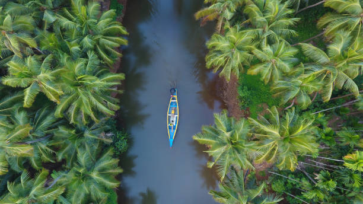

History of Kerala
Ancient history The Mauryan emperor Ashoka of Magadha first recorded the term "Kerala" in a rock inscription, referring to it as "Keralaputra". At the time, Kerala was one of four independent kingdoms in southern India. The region was known for its spices, especially pepper, and was a major trading center. Colonial history The Portuguese explorer Vasco da Gama reached the port of Kozhikode in 1498, and Portugal established trading posts in Kerala. The Dutch replaced the Portuguese in the 1600s, and the British East India Company took over in the 1700s. Britain ruled Kerala until India gained independence in 1947.

